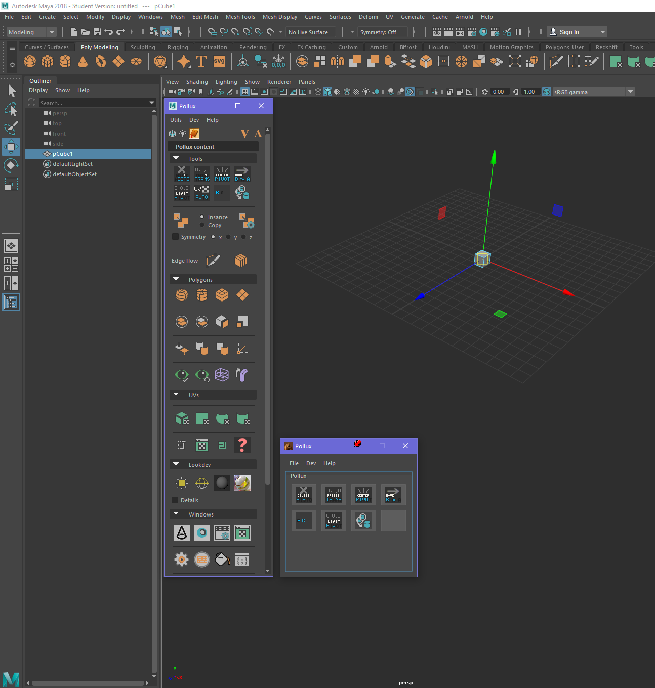
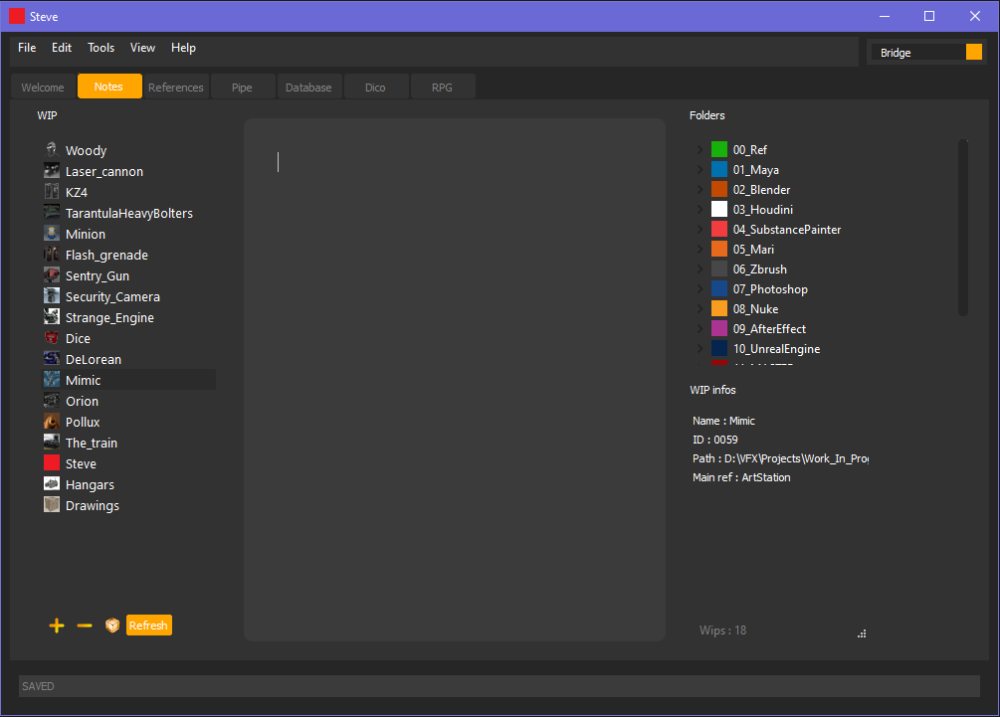
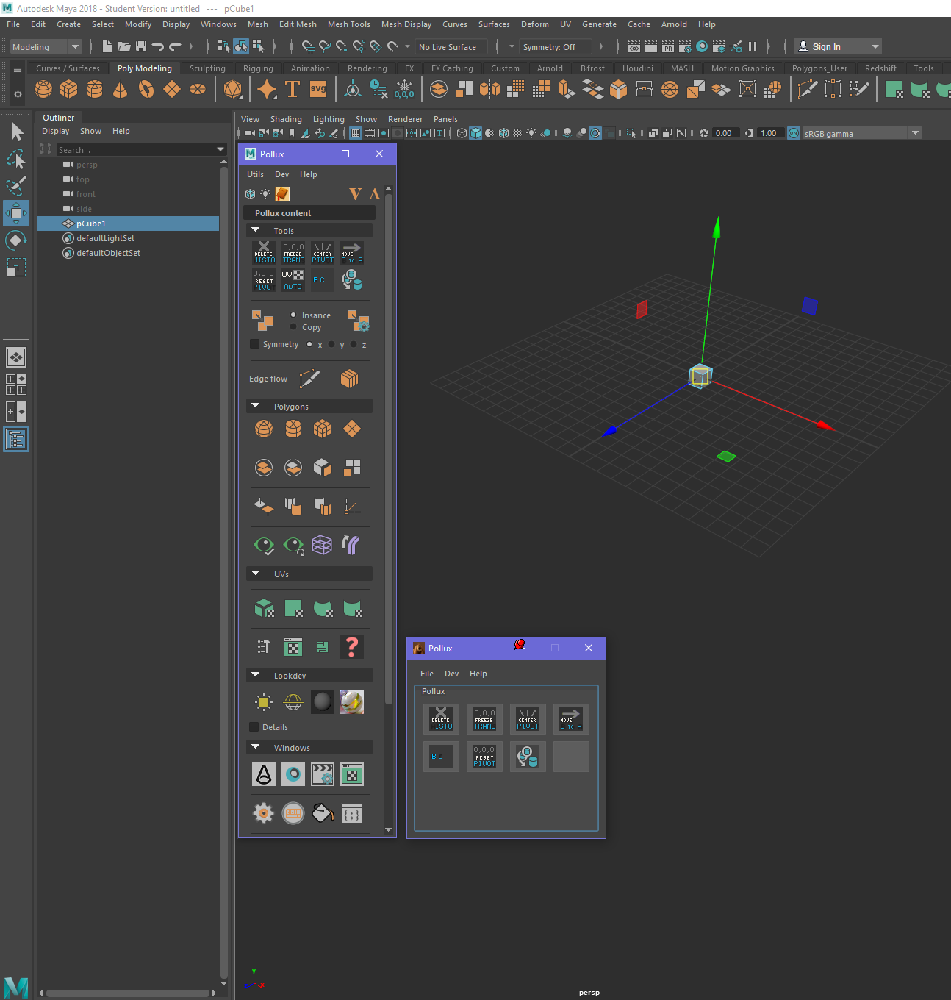
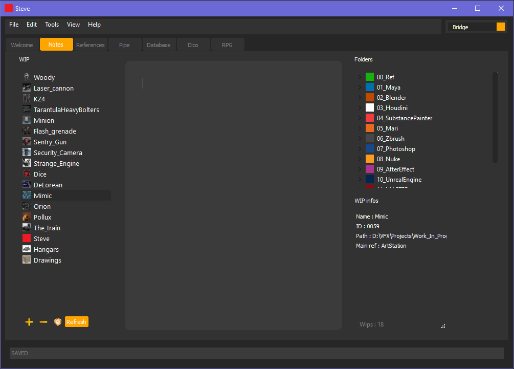

Pollux
Pollux is a script implemented in Maya to ease our life when we work onto it.
Steve
Steve is a standalone script. It is used to manage our WIPs.
Pollux is a script implemented in Maya to ease our life when we work onto it.
Steve is a standalone script. It is used to manage our WIPs.
The final goal is to make these two scripts interactive and responsives in order to provide a workflow as fast and user-firendly as possible.